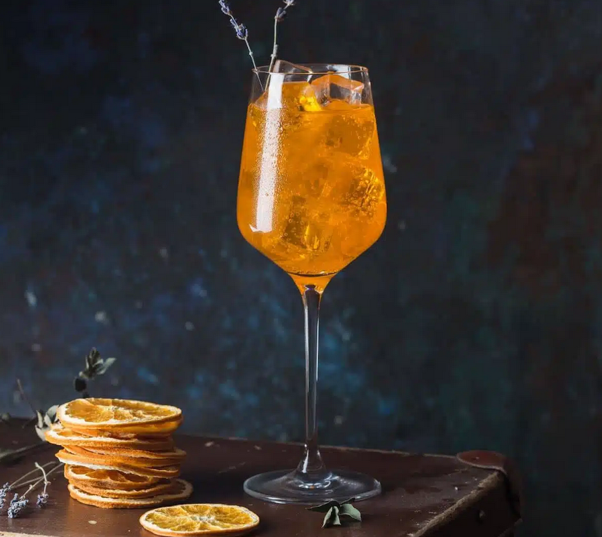
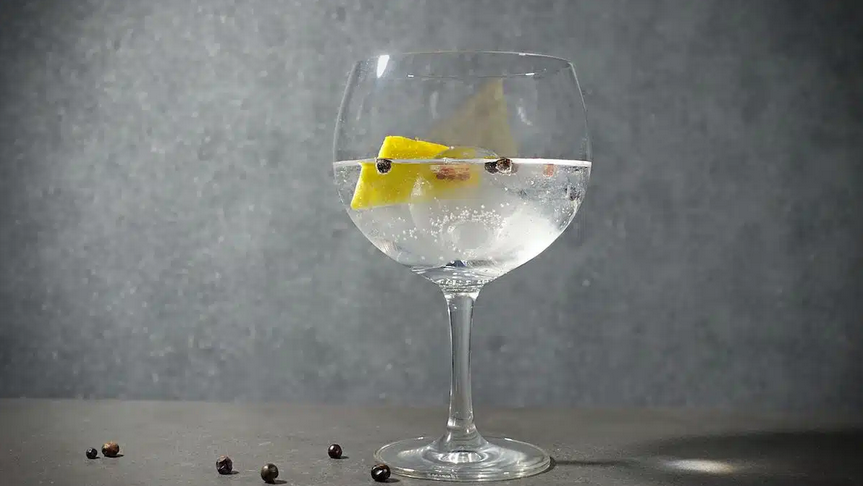
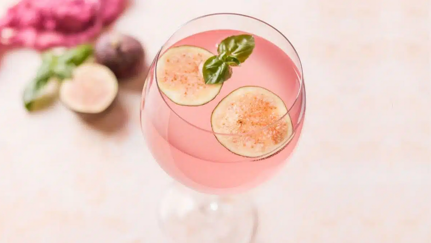

Gin & Tonic
Equipment
- 1 Jigger
- 1 Bar spoon
Ingredients
- 2 ounces Gin
- 6 ounces Tonic water
- 1 lemon/lime wheel
Instructions
- Fill your glass with ice cubes.
- Add a butof tonic water, approx 1 - 1.5 oz. 6 oz Tonic water.
- Gently pur in the Gin followed by the rest of the tonoc water. 2 oz Gin. 6 oz Tonic water.
- Press some lemon juice into the drink and add your garnish to the drink.
Asperol Gin & Tonic
Equipment
- 1 Jigger
Ingredients
- 1.5 oz Gin (Edinburgh Seaside Gin or Gin Mare)
- 0.5 oz Asperol
- 4.5 oz Mediterranean tonic water
- 1 dash Angostura bitters
- 1 dash Orange bitters
Instructions
- Add ice spheres in a balloon or wine glass and swirl to chill it.
- Get rid of melted water and then pour in the Gin.
- Add Asperol, give it a quick stir and then fill up with tonic water.
- Add one dash of Angostura bitters and one dash of orange bitters.
- Garnish with a slice of orange.
Pink Fig & Tonic
Equipment
- 1 Bar spoon
- 1 Jigger
Ingredients
- 2 oz London Dry Gin
- 4 oz Tonic water (Indian or dry)
- 0.5 oz Fig Syrup
- 0.25 oz lemon juice
- 2 slices fresh fig (for garnish)
Instructions
- Add Gin, fig syrup and a splash of lemon juice to your highball glass. Give everything a good stir until Gin and syrup are blended fully
- Now add a large ice cube and top up everything with tonic water. (4 oz of Tonic Water)
- Use two slices of fresh fig to garnish your drink. Cheers!. (2 slices of fresh fig)